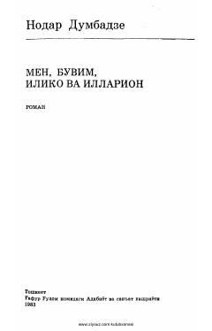

MBGruzin yozuvchisi Dumbadzening do'stlik va insoniylikka bag'ishlangan romani.
Bu kitob gruzin yozuvchisi Nodar Dumbadzening mashhur 'Men, buvim, Iliko va Illarion' romanining o'zbek tiliga tarjimasi bo'lib, N. Komilов va M. Xudoyqulов tomonidan ruscha asliyatdan o'girilgan. Romanda hayotda uchraydigan kamchiliklar, do'stlik, totuvlik va sevgi ulug'lanadi. Asar 1983-yilda Toshkentda G'afur G'ulom nomidagi Adabiyot va san'at nashriyotida chop etilgan.